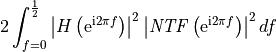

pydsm.NTFdesign.filter_based.quantization_noise_gain¶
-
pydsm.NTFdesign.filter_based.quantization_noise_gain(NTF, H, H_type='zpk', **options)¶ Compute the quantization noise power gain after a filter
Deprecated since version 0.11.0: Use
pydsm.NTFdesign.quantization_noise_gain(). Note that the interface is slightly different.- Parameters
- NTFtuple
NTF definition in zpk or nd form
- Htuple or callable or array_like
output filter definition in zpk or ba form if H_type=’zpk’ or ‘ba’ (in this case, H is a tuple with 3 or 2 entries); output filter magnitude response if H_type=’mag’ (in this case, H is a callable with argument f in [0,1/2]); output filter impulse response if H_type=’imp’ (in this case, H is an array)
- H_typestr
type of specification for parameter H. One of: ‘zpk’, ‘ba’, ‘mag’ or ‘imp’
- Returns
- areal
noise power gain
- Other Parameters
- quad_optsdictionary, optional
Parameters to be passed to the
quadfunction used internally as an integrator. Allowed options areepsabs,epsrel,limit,points. Do not use other options since they could break the integrator in unexpected ways. Defaults can be set by changing the functiondefault_optionsattribute.
- Raises
- ValueError
‘Incorrect filter type specification’ if the filter is not specified correctly.
See also
scipy.integrate.quadfor the meaning of the integrator parameters.
Notes
In the default case the computation is practiced as
